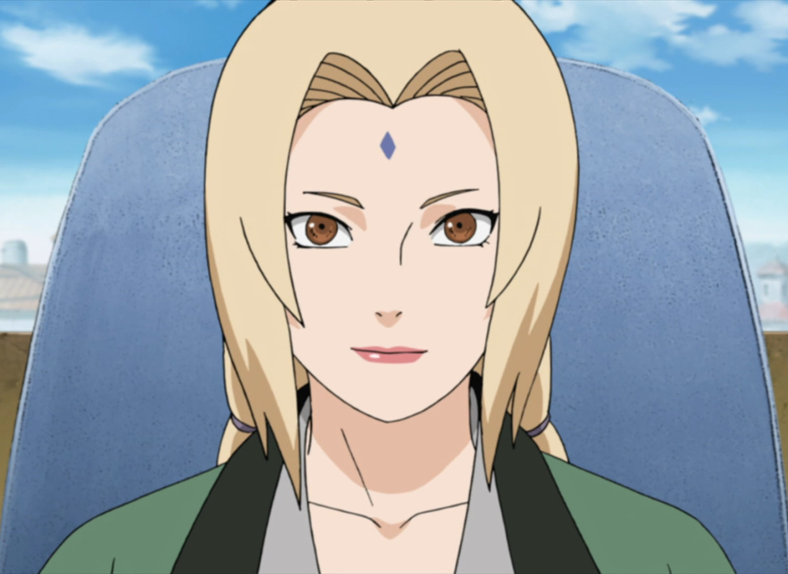

Naruto Clássico
Sinopse
Naruto é um jovem órfão habitante da Vila da Folha (Konoha) que sonha se tornar o quinto Hokage, o maior guerreiro e governante da vila. Ao se graduar como ninja, descobre que tem um demônio raposa selado dentro de si. Seu pai, o quarto Hokage, aprisionou a raposa no próprio filho quando ela ameaçava destruir a Vila da Folha, sacrificando assim a própria vida. Agora Naruto vai contar com a ajuda dos amigos Sakura e Sasuke e do seu sensei, Kakashi Hatake, para perseguir seu sonho e deter os ninjas que planejam fazer mal á vila de Konoha.

Conheça um pouco sobre Naruto Clássico...
Aqui abaixo colocarei um pequeno resumo sobre as Quatro Primeiras Temporadas do Clássico, e acredito que, conhecendo um pouco dessa história, ninguém resiste a não saber mais e assistir a esse íncrivel anime que é inspiração para muitos e causa nos telespectadores todos os tipos de sentimentos possíveis. Bom, espero que você goste deste montante que fiz com base em informações de outros sites e em minha própria experiência em Naruto. Se divirta! :)
1° Temporada
Com 26 episódios, a primeira temporada de Naruto Clássico nos mostra um pouco sobre Konoha, além de apresentar alguns dos personagens mais importantes da série, como Naruto Uzumaki, Sasuke Uchiha, Sakura Haruno, Kakashi Hatake, Iruka, Konohamaru, dentre muitos outros.
No primeiro episódio, Naruto bebê é selado pelo Quarto Hokage, se tornando um Jinchuuriki da raposa de 9 caudas. Depois vemos Naruto pintando a escultura dos Hokages e sendo perseguido pelo Iruka sensei, o que define o Naruto como palhaço da academia e como um garoto que clama por atenção, o que não é surpresa, já que ele é menosprezado e discriminado por todos da vila.
Não demora muito para Naruto conseguir sua bandana da Folha e se formar na academia, formando uma equipe com seu rival Sasuke, o último ninja do clã Uchiha e o mais admirado pelas garotas, e com sua crush Sakura, que o acha ridículo e é apaixonada por Sasuke.
Durante toda essa temporada adentramos um pouco no mundo de Konoha, que é governada pelo 3° Hokage
(Hiruzen Sarutobi). Vemos os episódios marcantes da luta da equipe Kakashi contra Zabuza e Haku e, de cara, já
nos emocionamos muito.
Na primeira temporada a prova chunin começa, e daí conhecemos vários outros personagens, como Rock Lee, Guy Sensei, Gaara da vila da Areia e muitos outros de várias aldeias diferentes, já que o Exame Chunin reúne ninjas que passam por uma série de testes que genins precisam fazer para se consagrarem chunins.
2° Temporada
Com 26 episódios, a segunda temporada nos mostra a continuação da Prova Chunin. Começa falando sobre a floresta da morte, onde cada equipe deve pegar um pergaminho da terra (se a equipe ja portar o do céu) ou do céu (se a equipe ja portar o da terra), ou seja, cada equipe deve ter um par de pergaminhos (um do céu e outro da terra) , e nao deve abrir até chegar na torre.

Na floresta, a equipe 7 (Naruto, Sakura e Sasuke) encaram muitos problemas, já que Orochimaru, um dos três Sannins Lendários, está atrás de Sasuke e começa a por o seu plano em ação. Nessa luta,Orochimaru deixa sua marca (Marca da Maldição) no Sasuke, o que atrapalha o time durante a prova, já que a marca altera a força e o controle de sasuke sobre seu chackra.
A equipe luta contra equipes de outras aldeias e acabam encontrando Kabuto (um servo fiel de Orochimaru disfarçado como um participante da prova), que os ajuda a concluir a prova. Ao concluir a prova e abrir os pergaminhos, são levados a uma sala onde estão todos os aprovados. Como os aprovados eram muitos, tiveram de organizar lutas preliminares para decidir os novos chunins. As preliminares são lutas de dois combatentes, que podem usar sua força combinada com chackra e inteligência. Sendo a última mais utilizada por uns do que por outros.
3° Temporada
Com 28 episódios, a terceira temporada começa com Naruto conhecendo Jiraya, um dos três Sannins Lendários, mais conhecido como o Sábio dos sapos. O treinador designado por Kakashi para treinar Naruto era Ebisu, mas Naruto implora para que Jiraya treine ele para a terceira fase da prova chunin. Com muita resistência Jiraya sede e começa a treinar Naruto que até assina um contrato para que possa realizar invocações. Com isso, um treinamento duro começa e Naruto apelida Jiraya de Sábio Tarado, já que este ia contra os três príncipios ninja: dinheiro, bebida e mulheres.

O dia da prova Chunin chega. Naruto luta contra Neji Hyuuga, e ganha a luta, se esforçando e mostrando o seu verdadeiro jeito ninja de ser: não desistir e não voltar atrás em suas promessas. Verdades sobre o clã Hyuuga vem a tona e Naruto ensina uma lição valiosa á Neji. Sasuke batalha contra Gaara, mas sua luta não termina. Orochimaru, disfarçado do Kazekage da aldeia da Areia, coloca em prática seu plano de destruir a vila. Durante seu atentado, Orochimaru luta contra Sarutobi, mesmo assasinando-o perde os movimentos de seus braços na batalha. Como a aldeia da Areia havia tramado junto com Orochimaru, Gaara luta contra a equipe 7, e Naruto ganha a luta de uma forma sensacional, que impressiona Sasuke. Além de perder, Gaara aprende uma lição valiosa com Naruto: que a força não vêm da solidão, e sim da vontade de proteger seus companheiros.

4° Temporada
Com 26 episódios, a quarta temporada começa com a reconstrução da vila, já que, mesmo tendo sido interrompido, o ataque deixou muitos danos. Itachi, irmão de Sasuke Uchiha que matou todos de seu clã, aparece na vila. Jiraya e Naruto saem em busca de Tsunade, uma dos 3 Sannins Lendários, a fim de convencê-la a se tornar Hokage da Folha. Itachi e Kisame não perdem tempo e vão atrás de Naruto (os dois fazem parte da Akatsuki, um grupo de vilões que estão atrás das bestas de caudas). Durante os acontecimentos, Sasuke confronta Itachi e Jiraya salva Naruto da dupla. No caminho pela busca por Tsunade, Jiraya treina Naruto, que se esforça muito.
Tsunade, Jiraya, Naruto e a aluna de Tsunade (Shizune), lutam contra Orochimaru e Kabuto. Após ganharem, os 4 se dirigem até a Folha para Tsunade curar Lee e Sasuke e se tornar Hokage. Tsunade se impressiona muito com Naruto e cria uma amizade diferente com ele (passível de luta e muito carinho). A nova Hokage dá de presente um colar que reprime a raposa de nove caudas e que ganhou de avó (o primeiro Hokage), e que passou por outros dois garotos no passado de Tsunade, que possuíam em comum com Naruto, o sonho de se tornar Hokage.
Personagens
Se voce chegou até aqui acredito que se interessou pelo anime e queira saber mais. Então se liga nesse super resumo sobre os 7 personagens mais importantes do Naruto Clássico e aproveite para conhecer seus poderes e outras curiosidades!
Vai poder, inclusive, entender esse meme e aprender a correr como esse ícone aí do giphy.
Naruto Uzumaki

Vila: Vila Oculta da Folha
Ainda criança, Naruto se tornou um jinchūriki, nome que se dá aos humanos que têm bestas de caudas seladas
dentro deles. Portador de Kurama, a Raposa de Nove-Caudas que um dia atacou Konoha, o menino acabou sendo
excluído e sofrendo preconceito durante toda a sua infância em sua aldeia.
Com o sonho de um dia se
tornar Hokage, o líder de sua aldeia, Naruto passa por um treinamento duro para se formar como ninja.
Durante sua trajetória para se tornar um ninja, Naruto passa de um dos piores alunos de sua turma para um dos
guerreiros mais poderosos de Konoha. Mas seus planos para um dia se tornar Hokage são atrapalhados pelo fato
de ele precisar salvar Sasuke do caminho de ódio e escuridão que o jovem tomou.
Poderes
O chakra de Naruto é, de certa forma, especial, o que possibilitou que ele se tornasse o portador de Kurama. O nível de seu chakra é cerca de 4 vezes maior que o do seu mentor Kakashi. Aos poucos, vai desenvolvendo um maior controle de seu chakra e também sobre Kurama, entidade cujo poder antes só conseguia acessar em momentos de raiva. Ainda assim, caso não controle sua raiva, é possível que ele seja dominado pela influência negativa da besta de nove-caudas.
Sasuke Uchiha

Vila: Vila Oculta da Folha
O jovem Sasuke tem um passado trágico, sendo um dos únicos sobreviventes do massacre que seu irmão mais velho,
Itachi, fez com toda sua família. Almeja se tornar um shinobi (ninja) com a intenção de um dia ser forte o
suficiente para vingar o clã Uchiha e matar Itachi.
Todo esse ódio que alimenta desde tão cedo o tornou um jovem amargo e sério. Embora Naruto o veja como um grande
amigo, Sasuke vê Naruto quase como um rival, principalmente quando decide abandonar o Time 7 e Konoha para partir
em busca de mais poder.
Ainda assim, o tempo em que treinou com o time Kakashi fez com que ele aprendesse a admirar seus companheiros e até
se arriscasse para ajudá-los. Por esse motivo, Sakura se apaixonou por ele e Naruto arriscou sua vida e seus planos
de um dia se tornar Hokage para salvá-lo do caminho em que se envolveu.
Poderes
Com um talento nato e um chakra de grande poder, Sasuke foi considerado uma espécie de gênio natural ainda bem
jovem. Com apenas 7 anos de idade, ele já conseguia usar a técnica de Liberação de Fogo do clã Uchiha.
Em sua trajetória, desenvolve poderes como a invocação da poderosa cobra Manda, além do Mangekyō Sharingan em seu
olho, que lhe confere diferentes poderosos recursos.
Sakura Haruno
Vila: Vila Oculta da Folha
Sakura era uma criança insegura, algo que mudou após conhecer Ino e se tornar amiga da jovem. Embora se
destacasse como uma estudante exemplar e extremamente inteligente na Academia, por vezes deixou seu interesse
em Sasuke e sua preocupação com a aparência a distrair de suas habilidades ninja.
Aos poucos, vai amadurecendo e passa a conhecer e a compreender melhor seus companheiros do Time 7, Naruto e
Sasuke, embora nunca tenha passado por grandes perdas como eles. Corajosa e determinada, cada vez mais ela
demonstra estar disposta a se arriscar por aqueles que ama.
Além disso, traz sempre consigo as lições e habilidades que aprendeu com sua mestre Tsunade.
Poderes
No início de sua jornada como ninja, o forte de Sakura era basicamente sua inteligência, mas suas
habilidades em geral era consideradas inferiores às de Sasuke e Naruto. Mas seu treinamento com Tsunade
mudaria isso.
Sakura desenvolveu significantemente suas habilidades e alcançou um estilo de luta
próprio. Além disso, com seu excelente controle de chakra, ela começou a seguir o caminho para se tornar
uma ninja médica.
Kakashi Hatake
Vila: Vila Oculta da Folha
Teve uma vida marcada por perdas, incluindo a morte de seu pai e de seus
amigos próximos Rin e Obito Uchiha, mas mesmo assim Kakashi cresceu como um
homem justo e responsável. Por seguir as regras e treinar arduamente, Kakashi
completou suas habilidades com o Sharingan que recebeu do amigo Obito.
Um dos guerreiros mais talentosos de Konoha, ficou responsável por orientar o
time 7, formado por Naruto, Sasuke e Sakura.
Poderes
Um ninja extremamente habilidoso, Kakashi ainda tem a seu favor o Sharingan que recebeu de
Obito, um poder que se manifesta em seu olho. Pelo seu Sharingan é conhecido por todos como o
Ninja que Copia.
Essa habilidade lhe permite ver o fluxo de chakra em seus oponentes; lhe proporciona uma inacreditável
percepção que lhe permite reconhecer genjutsus e diferentes formas de chakra; e possibilita que ele
copie quase qualquer técnica de luta ou defesa de seus adversários e as use em batalha.
Tsunade
Vila: Vila Oculta da Folha
Denominada a Quinta Hokage, demonstra grande lealdade a sua aldeia, chegando até mesmo a
dividir seu chakra para salvar a vida de milhares de pessoas em Konoha durante grandes ataques.Ela,
inclusive, treina pessoalmente Sakura, a orientando para se tornar uma grande ninja médica, como ela
mesma.
Tsunade é uma dos Sannin Lendários de Konoha. Também
conhecidos como os Três Ninjas Lendários, o grupo é formado por ela, Jiraya e Orochimaru.
Eram considerados os maiores ninjas de seu tempo por cuasa das grandes Guerras Ninjas que
ocorreram no passado.
Poderes
Possui uma força gigantesca, grande velocidade e resistência. Tsunade é capaz de realizar qualquer procedimento médico para curar ferimentos que muitos outros considerariam mortais e impossíveis de reverter.Por esse motivo é conhecida como a maior Ninja Médica de todas.
Jiraya
Vila: Vila Oculta da Folha
Um dos integrantes dos Três Ninjas Lendários, Jiraya é um dos maiores
guerreiros de Konoha, mas também ficou conhecido por seu jeito pervertido,
chegando a desenvolver técnicas para observar mulheres sem ser percebido,
além de escrever uma popular série de livros de ficção para adultos.
Apesar disso, também se destaca por sua lealdade a Konoha, sempre presente
para proteger a vila. Após a morte do atual Hokage, rejeita o cargo quando
lhe é oferecido, por não se considerar digno, e se voluntaria para buscar
Tsunade para a posição.
Poderes
Ficou conhecido como Sábio dos Sapos por ter como uma técnica assinatura
a invocação de sapos. Mas foi o nível de seu poder e de suas habilidades que
o fizeram ser considerado um dos três Sannin Lendários.
Com uma impressionante reserva de chakra, foi capaz de aprender o Modo Sábio,
um estado em que o ninja mistura a força natural do mundo ao seu chakra, podendo
explorar essa energia, desenvolver novas técnicas e aumentar a intensidade de
outros recursos de batalha e defesa de que já disponha.
Orochimaru
Vila: Vila Oculta da Folha
Com uma mente distorcida desde jovem, Orochimaru reagiu ao trauma de perder
pessoas próximas desdenhando da fragilidade da vida humana. Por esse motivo,
acabou desejando alcançar a imortalidade, com o objetivo de ter tempo para
descobrir todos os segredos do mundo.
Para tanto, chegou a realizar experiências não autorizadas em outras pessoas
para ver que modificações o corpo humano suportava e quais delas proporcionavam
novas habilidades e um passo a mais na busca por imortalidade. Quando foi
descoberto, acabou sendo expulso de Konoha, o que fez nascer nele o desejo de se
vingar de sua aldeia.
Poderes
Um dos shinobis mais poderosos da história de Konoha, Orochimaru tem um chakra
sombrio que pode causar um efeito pesado na atmosfera ao ser lançado. As várias
experiências que fez em seu próprio corpo lhe proporcionaram resistência, velocidade
e força sobre-humanas.
Além disso, tornou-se capaz de manipular a forma de seu corpo, recriando-o como deseje
e sendo capaz de se curar de grandes ferimentos. Sua afinidade com cobras chegou a um
ponto de ele conseguir transformar seu corpo em uma espécie de cobra gigante formada
por cobras menores.
Como correr igual ao Naruto e outros ninjas!
1° Passo
Você deve estar com roupas confortáveis e que facilitem o deslocamento. Lembre-se:
este passo é muito importante para que você execute as outras partes com a maestria de
um Shinobi de verdade!
Vista algo como isso, por exemplo:
2° Passo
Primeiro você deve ter certeza de que seus pés estão no chão e que você está pronto para correr.
Se a superfície que você está for no mar ou rio, por exemplo, concentre o seu chacka nos pés e logo
após isso, somente depois disso, lance os seus braços para trás.
Seus braços devem estar em
uma posição confortável, com as mãos em direção ao céu ou para trás.
3° Passo
Como terceiro e último passo, agora você está pronto para correr. Movimente os seus pés para criar motricidade e, então, corra como nunca. A posição dos braços te darão mais resistência e força para correr por mais tempo. Ah! E quem sabe dá até pra levar aquele amigo nas costas, né? Só não exagere, pois os danos podem ser permanentes.